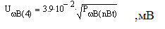

Тема №3. Устройство и эксплуатация систем передачи с частотным разделением каналов
Занятие №10. Аппаратура каналообразования П-330-24.
Учебные вопросы:
Литература:
- Многоканальные системы передачи, Ч.1. Теоретические основы построения МСП. – Мн.: БГУИР, 2010.
- Многоканальные системы передачи (часть 2). Учебно-методическое пособие «Аппаратура МКСП с ЧРК». – Мн.: БГУИР, 2010.
- Учебно-наглядное пособие «Альбом схем аппаратуры МКСП». – Мн.: БГУИР, 2010.
- Кирилов В.И. Учебное пособие «Многоканальные системы передачи»: – М.: Новое знание, 2003.
1. Назначение, состав и технические характеристики аппаратуры П-330-24.
1.1. Назначение, структура и состав оборудования полевой кабельной линии (ПКЛ-29б/А-24)
24-канальная однокабельная система передачи с частотным разделением каналов А-24 совместно с полевым кабелем дальней связи П-296 предназначена для развертывания рокадных и допол¬нительных осевых линий связи на полевой опорной сети связи оперативных объединений, а также для развертывания линий при¬вязки пунктов управления к опорным узлам связи.
Максимальная дальность связи на ПКЛ-296/А-24 равна 1000 км. При этом структура ПКЛ должна быть такой, чтобы, обязательно выполнялись все нормы на электрические параметры каналов. На рис. I.I представлена схема самой простой по структуре ПКЛ-296/А-24. На такой ПКЛ организуются две оконечные станции, два пункта транзита по ТЧ и промежуточные усилительные станций ( обслуживаемые и необслуживаемые).
Оконечная, станция обеспечивает преобразование полос частот каналов ТЧ и ШК в полосу частот линейного сигнала и обратное преобразование, передачу и прием линейного сигнала, коррекцию АЧХ линейного тракта. Комплектуется оконечная станция аппаратурой A-24-0,
Пункты транзита по ТЧ обеспечивают преобразование линейного сигнала в полосу частот каналов ТЧ, транзит каналов ТЧ и обратное преобразование полос частот каналов ТЧ в полосу частот линейного сигнала, коррекцию АЧХ линейного тракта в двух направлениях передачи. Комплектуется пункт транзита по ТЧ двумя комплектами аппаратуры А-24-0.
Промежуточная станция обслуживаемого усилительного пункта (ОУП) обеспечивает усиление линейного сигнала и коррекцию АЧХ линейного тракта на прилегающих усилительных участках. На этих станциях устанавливается аппаратура с автоматической регули¬ровкой усиления, работающей по специальным сигналам токов трех или четырех линейных КЧ(ЛКЧ). Комплектуется промежуточная станция ОУП аппаратурой А-24-П.
Промежуточная станция необслуживаемого усилительного пункта (НУП) обеспечивает усиление линейного сигнала и коррекцию АЧХ линейного тракта на прилегающих усилительных участках. На этих станциях устанавливается аппаратура также с автоматической регулировкой усиления, работающей по специальным сигналам токов двух контрольных частот (КЧ-НУП). Комплектуется промежуточная станция НУП аппаратурой А-24-НУП и упаковкой переносного переговорно-контрольного устройства ППКУ. Упаковка ППКУ обеспечивает ведение служебных переговоров с НУП при настройке ПКЛ и измерение диаграммы уровней при регулировке усиления НУП. После настройки ПКЛ упаковки ППКУ остаются только на тех усилительных станциях (НУП), на которых оборудуются контрольно-технические посты (КТП) для эксплуатационного прик¬рытия линии.
Электропитание усилителей НУП осуществляется дистанционно по искусственным цепям рабочих цепей кабеля от оконечных и промежуточных обслуживаемых станций.
На секции дистанционного питания может быть включено до 8 НУП. Оконечная станция обеспечивает питание четырех НУП, промежуточная обслуживаемая станция - по четыре НУПа в каждую сторону.
По усилительным способностям и пределам корректирующих и регулирующих устройств НУП длина усилительного участка может находиться в пределах от 8,5 до 11,5 км (номинальная длина усилительного участка составляет 11 км). Длины усилительных участков, прилегающих к обслуживаемым пунктам и ПКЛ, состоящей только из двух оконечных станций, могут находиться в пределах от 0 до 11,5 км. Длина секции дистанционного питания до 99 км, а однородного участка - до 400 км.
Структура ПКЛ-296/A-24 определяется организационными требованиями. На опорных узлах связи (ОУС) возникает необходимость транзита и выделения каналов. Пункты транзита и пункты выделения каналов организуются с помощью двух станций А-24-0. Последние могут оборудоваться на обслуживаемых и необслуживаемых усилительных пунктах. Качество образуемых аппаратурой простых каналов позволяет организовывать на ПКЛ до 8 пунктов транзита по ТЧ, 8 - по ШК-12 и 12 - по ШК-48.
В ряде случаев возникает необходимость перехода с ПКЛ на радиорелейные и тропосферные линии связи. Такой переход осуществляется на пунктах сопряжения с помощью аппаратуры А-24-СР. На этих же пунктах могут также оборудоваться пункты выделения и транзита каналов. Дальность связи при работе по РРЛ к ТРЛ определяется возможностями используемых радиорелейных и тропосферных станций.
При организации линии связи кабель должен укладываться в грунт, до 30 % кабеля допускается прокладывать по поверхности грунта.
Основной режим работы системы передачи А-24 - двухполосный. Для обеспечения встречной работы с аппаратурой П-301 и П-302 по ПКЛ и при работе по РРЛ в аппаратуре оконечных станций и аппаратуре сопряжения предусмотрена возможность перехода в однополосный режим.
1.2. Назначение и тактико-технические характеристики
Аппаратура А-24-б в составе ПКЛ-296/А-24 является, каналообразущей и устанавливается на оконечных пунктах и пунктах транзита и выделения каналов. Она обеспечивает, преобразование полос частот сигналов, передаваемых по каналам ТЧ и ШК в полосы частот линейного тракта, и обратное преобразование их на приеме. Аппаратура А-24-0 может использоваться в качестве каналообраэующей ча радиорелейных и тропосферных линиях. Аппаратура А-24-0 обеспечивает встречную работу с аппаратурой П-3О1-0 и П-302-0.
Оконечное оборудование линейного тракта аппаратуры А-24-0 обеспечивает компенсацию регулярных амплитудно-частотных искажений, вносимых прилегающим участком кабели П-296 длиной от 0 до 11,5 км при работе с однотипной аппаратурой или аппаратурой П-301-0 и от 0 до 15 км - при встречной работе с аппаратурой П-302-0. Кроме этого обеспечивается компенсация температурных изменений затухания линии на усилительном участке и остатка нескомпенсированных АЧИ на секции дистанционного питания.
Аппаратура А-24-0 обеспечивает дистанционное электропитание четырех НУП и ведение служебных переговоров по каналам постанционной и участковой служебной связи.
Состав оборудования
В состав аппаратуры А-24-0 входит следующее оборудование:
- оборудование коммутации низкочастотных окончаний (КНЧ);
- оборудование индивидуального преобразования (ИП-3);
- оборудование предварительного группового преобразования (ПГП);
- преобразовательное оборудование (ПО);
- линейное оборудование (ЛО);
- оборудование широкополосных каналов с устройствами коммутации (ОШК);
- оборудование постанционной ПСС) и участковой (УСС) служебной связи;
- оборудование постанционного и участкового телеконтроля (ТК);
- устройства электропитания (местного и дистанционного);
- генераторное оборудование;
- устройства системы сигнализации и контроля.
Оборудование оконечной станции А-24-0 размещается в типовых моноблоках, соединенных между собой соединительными кабелями с разъемами и рассчитано, на установку как в стационарных помещениях, так и в аппаратных.
Перечень моноблоков, их количество и массо-габаритные данные приведены в табл. 1.1.
В состав аппаратуры входит комплект запасных частей я принадлежностей ЗИП-0 №1, содержащий соединительные и измерительные шнуры, запасные и съемные части. ЗИП-0 №1 и эксплуатационная документация размещаются в ящике с габаритами 824x556x396 мм; масса ЗИП-0 №1 не превышает 25 кг.
Таблица 1.1
| Наименование и обозначение | Кол-во в комплекте, шт | Габаритные размеры мм | Масса (без крышки), кг |
|---|---|---|---|
| Моноблок ПГ Моноблок СС-О Моноблок СТК-О Моноблок ИП Моноблок СН Моноблок ПО-ШКВЧ Моноблок ЛО Моноблок ИДП Моноблок КФТО Моноблок КФО ПРГ |
2 1 1 1 1 1 1 1 2 1 |
640х180х255 640х180х255 640х180х255 640х180х255 640х180х255 640х180х255 640х180х255 640х180х255 640х180х255 640х180х255 |
20 18 14 38 25 40 58 23 23 16 |
Кроме того, ТУ предусмотрен вариант поставки аппаратуры с дополнительным комплектом запасных частей ЗИП-0 №2, содержащим основные блоки линейного тракта и генераторного оборудования. Эти блоки размещены в типовом моноблоке с габаритами 640x290x180 мм и частично (два блока) в моноблоке ЛО. Масса ЗИП-0 №2 не превышает 18 кг.
12-канальные оконечные станции A-I2-0, работающие по 24-канальноиу тракту, получается из аппаратуры А-24-0 путем, исключения одного моноблока ПГ и одного моноблока КФТО. Общая масса аппаратуры (с учетом массы передних крышек и соедини-тельных шнуров) А-24-0 не превышает 350 кг, A-I2-0 - 310 кг. С учетом передних крышек глубина моноблоков увеличивается на 35 мм.
Электропитание и условия эксплуатации
Для электропитания аппаратуры А-24-0 используется пере¬менный ток частотой 50+-1 Гц и напряжением 220 В с изменениями от +10 до -15%. Питание усилителей НУП осуществляется дистанционно от стабилизированного источника постоянного тока оконечных станций и ОУПов. Величина тока дистанционного питания составляет 100 мА, предусмотрена возможность перехода питания НУПов током 115 мА, для питания аппаратуры П-ЗО1-НУП.
Количество дистанционно питаемых НУП может быть от одного до четырех .
Напряжение дистанционного питания в зависимости от числа включенных НУП и длины усилительных участков находится в пределах от 80 до 520 В.
Мощность переменного тока, потребляемая аппаратурой оконечной станции, не превышает 460 В*А при четырех дистанционно-питаемых НУП.
Для сохранения работоспособности служебного канала при пропадании сети переменного тока предусмотрена возможность питания оборудования участковой служебной связи (УСС) от аккумуляторной батареи с напряжением 10-18 В (потребляемый ток 120-180 мА).
Аппаратура оконечных станций А-24-0 (A-I2-0) предназначе¬на для эксплуатации в аппаратных в условиях:
- изменения температуры окружающей среды от минус 10 до плюс 50С;
- относительной влажности воздуха до 98% при температуре плюс 35С;
- воздействия инея и росы;
- понижения относительного давления 450 мм рт.ст.
Аппаратура сохраняет работоспособность после пребывания в условиях повышенной до плюс 65С и пониженной до минус 50С температуры, а также после пребывания в условиях пониженного атмосферного давления 90 им рт.ст..
Транспортировка аппаратуры может осуществляться любым видом транспорта. Срок службы аппаратуры 18 лет.
Возможности каналообоазования и использования каналов.
Оконечная аппаратура А-24-0 обеспечивает получение: 24-стандартных каналов ТЧ; четырех широкополосных каналов ШК-12; двух широкополосных; каналов ШК-48; двух каналов служебной связи (постанционной служебной связи и участковой служебной связи).
Все каналы ТЧ могут быть использованы для обеспечения открытой и закрытой телефонной связи. До 7б% каналов ТЧ можно, задействовать для передачи данных, многоканального тонального телеграфа и фототелеграфа при средней загрузке на канал не более 135 мкВт в точке с нулевым относительным уровнем.
Широкополосные каналы ШК-12 предназначены для передачи данных с повышенными скоростями и других широкополосных сигна¬лов, а также для обеспечения транзитов.
Широкополосные каналы ШК-48 используются для передачи данных с еще более высокими скоростями и для транзитов по 12-канальным группам.
При передаче дискретных сигналов рекомендуется использовать широкополосные каналы ШК-12, полученные на основе второго третьего, седьмого (либо восьмого) предгрупповых трактов, и ШК-48, полученный на основе первого первичного тракта, электрические параметры которых лучше, чем у остальных трактов.
Четырехпроводные каналы постанционной и участковой служебной связи используется для обеспечения служебной телефонной связи между обслуживаемыми усилительными пунктами в пределах однородного участка (канал ПСС) и для связи между НУП и обслуживаемыми усилительными пунктами в пределах секции ДП (канал УСС).
Электрические параметры каналов ТЧ
Эффективно передаваемая полоса частот равна 0,3 -3,4 кГц. В зависимости от назначения канал ТЧ может быть установлен в один из режимов, перечисленных в табл. 1.2.
Таблица 1.2
| Режим | Уровень передачи, дБО | Уровень приема, дБО | Остаточное затухание, дБ |
|---|---|---|---|
| 4-проводный оконечный 4-проводный транзитный (Тр-1) 4-проводный транзитный (Тр-2) 2-проводный оконечный 2-проводный транзитный |
-13 4 2 0 -3,5 |
4 4 4 -7 -3,5 |
-17 0 -2 7 0 |
Для организации двухпроводных режимов работы необходимо использовать упаковку А-ДСВ, содержащую дифсистемы и устройства вызова для 12 каналов ТЧ.
Кроме режимов работы канала ТЧ, приведенных в табл. 1.2, предусмотрены вспомогательные режимы: автоответа и подключения ПВУ.
Входное и выходное сопротивления канала во всех, режимах работы равны 600 Ом.
Нормы на частотную характеристику остаточного затухания в зависимости от числа транзитов по ТЧ приведены в табл. 1.3. Допустимые увеличение и уменьшение остаточного затухания в табл. 1.3 приведены в дБ.
Таблица 1.3
| Число транзитов | Допустимое увеличение ar | Допустимое уменьшение ar | ||
|---|---|---|---|---|
| По отношению к остаточному затуханию 0,8 кГц в полосе частот, кГц | На частоте | |||
| 0,3+0,4 3,0+3,4 |
0,4+0,6 2,4+3,0 |
0,6+2,4 | 0,6+2,4 | |
| 0 1 2 3 4 5 6 7 8 |
1,9 3,0 3,9 4,8 5,6 6,4 7,2 8,0 8,7 |
1,0 1,5 2,0 2,4 2,8 3,2 3,6 3,9 4,3 |
0,6 0,8 1,0 1,2 1,4 1,6 1,8 2,0 2,2 |
0,6 0,8 1,0 1,2 1,4 1,6 1,8 2,0 2,2 |
Коэффициент нелинейных искажений, измеренный на частоте 800 Гц при номинальном уровне передачи, не превышает 1,5% (в том числе по третьей гармонике не более 1%).
Средняя взвешенная (псофометрическая) мощность шума в каналах ПКЛ заданной протяженности и структуры в точке с нулевым относительным уровнем не превышает величины Ршв=2,5L+335(n+1)+325m+135k, nВт, где L-протяженность линии, км; n-число транзитов по ТЧ, m- число транзитов по предгрупп. тракту, k-по групп. тракту. Допустимое взвешенное напряжение шума на 4-проводном выходе канала в точке с относительным уровнем 4 дБ определяется по формуле
Допустимое невзвешенное (интегральное) напряжение шума в этой же точке равно
Защищенность от внятных переходных помех между каналами не менее 70 дБ, а защищенность между трактами приема и передачи одного и того же канала не менее 61 дБ.
Вызов по каналам ТЧ осуществляется посылкой тока с частотой 2100 Гц и уровнем на 6 дБ ниже номинального. Число транзитов: 8-по ШК-12, 12-по ШК-48, 8-по ТЧ.
Электрические параметры каналов ШК-12
Полоса частот канала 12,3-23,4 кГц. В аппаратуре предусмотрено два режима работы канала ШК-12, отличающиеся уровнями передачи и приема. Режим работы ШК-12 представлен в табл. 1.4.
Таблица 1.4
| Наименование режима | Уровень передачи, дБ | Уровень приема, дБ |
|---|---|---|
| Режим I Режим II |
-24 -36 |
-24 -14 |
Номинальные значения входного и выходного сопротивлений каналов ШК-12 равны 600 Ом при затухании несогласованности, не менее 20 дБ в рабочей полосе частот.
Неравномерность амплитудно-частотной характеристики остаточного затухания простого канала ШК-12, образованного на основе любого предгруппового тракта (ПРГТ), кроме пятого не превышает +-1 дБ относительно значения, измеренного на частоте 18 кГц, за исключением полосы частот 15,4-16,3 кГц в ШК-12 образованном на основе первого ПРГТ, 19,4-20,3 кГц – четвертого ПРГТ и 19,7-20,3 кГц шестого ПРГТ . В ШК-12, образованного на основе пятого ПРГТ, неравномерность АЧХ не превышает +-1,8 дБ за исключением полосы частот 15,7-16,3 кГц и 19,7-20,3 кГц. Амплитудная характеристика на частоте 18 кГц отклоняется от постоянной не более чем на 0,3 дБ при повышении уровня на входе канала на 18,2 дБ относительно номинального значения. Неравномерность частотной характеристики ГВП не превышает 40 мкс в полосе частот 14-22 кГц для ШК-12, образованных на основе второго,третьего, седьмого и восьмого ПРГТ; в полосе частот 14-18 кГц – для ШК-12 на основе четвертого и шестого ПРГТ и в полосе частот 18-22 кГц – для ШК-12 на основе первого и пятого ПРГТ.
Напряжение собственных невзвешенных шумов в полосе частот 12,3 - 23,4 кГц не превышает 2 мВ. Затухание нелинейных помех вида 2*f1 ~ f2 не менее 70 дБ при номинальной относительном уровне каждой составляющей сигнала.
Защищенность от внятных переходных помет между различными каналами ШK-I2 в рабочей полосе частот не менее 74 дБ
Электрические параметры каналов ШК-48
Полоса частот канала 60,6 - 107,7 кГц
В аппаратуре предусмотрено три варианта использования ка¬нала ШК-48, отличающиеся уровнями передачи и приема.
Варианты использования канала ШК-48 представлены в табл. 1.5.
Таблица 1.5
| Вариант | Уровень передачи, дБ | Уровень приема, дБ |
|---|---|---|
| 1-й вариант 2-й вариант Транзит |
-31 -36 -23 |
-31 -23 -23 |
При режиме транзит используется транзитное оборудование только в тракте передачи.
Номинальное значение входного сопротивления со стороны зажимов передачи и приема равно 150 Ом при затухании несогласованности не менее 20 дБ в рабочей полосе частот.
Электрические характеристики простого канала ШК-48 следующие. Неравномерность амплитудно-частотной характеристики остаточного затухания относительно значения, измеренного на частоте 32 кГц, для ШК-48, образованного на основе первого первичного тракта, не превышает +-1,7 дБ, а для ШК-48 на основе второго ПТ - не превышают ±2,3 дБ в рабочей полосе частот, за исключением полос частот 6З,7 - 64,6; 83,7 - 84,6; 103,7 - 104,6 кГц и 83.7 - 84.6; 87,7 - 88,3; 103,7 - 104,кГц для первого и второго ШК-48 соответственно.
Амплитудная характеристика на частоте 82 кГц отклоняется от постоянной не более чем на 0,3 дБ при повышении уровня на входе на 22,6 дБ относительно номинального значения.
Неравномерность частотой характеристики ГВП 1-го ШК-48 не превышает 20 мкс, а 2-го - 70 мкс в полосе частот 66 -102 кГц за исключением полосы частот 82-86 кГц для первого ПК-48 и 82 - 90 кГц - для второго ШК-48.
Напряжение собственных невзвешенных шумов в полосе частот 60,6 - 107,7 кГц не превышает 2,2 мВ. Затухание нелинейных помех вида 2*f1-f2 не менее 74 дБ при номинальном относительном уровне каждой составляющей сигнала. Защищенность от внятных переходных помех между каналами Ш-48 не менее 74 дБ в рабочей полосе частот.
Электрические параметры каналов служебнойсвязи
Полоса частот канала ПСС - 0,3 - 3,4 кГц, канала УСС -0,3-2,4 кГц. Каналы ПСС и УСС могут использовался в peжимах, приведенных в табл. 1.6.
Таблица 1.6
| Режим | Уровень передачи, дБ | Уровень приема, дБ |
|---|---|---|
| 2-проводный оконечный 4-проводный оконечный 4-проводный транзитный |
0 -13 4 |
-7 4 4 |
Входное и выходное сопротивления во всех режимах работы каналов равны 600 Ом. Вызов в сторону вынесенного абонента в двухпроводном режиме работы каналов ПСС и УСС посылается током индукторной частоты, а в 4-проводном - тональной частоты 2,1 кГц. Вызов от вынесенного абонента принимается на громкоговоритель.
Вызов в сторону канала УСС посылается голосом, либо то¬ком зональной частоты 2,1 кГц для ОУП и 1,3 кГц для НУП, а в сторону канала ПСС - голосом, либо током тональной частоты 2,1 кГц.
Электрические параметры канала ПСС в основном аналогичны параметрам каналов ТЧ.
Канал УСС имеет следующие электрические параметры.
Отклонение остаточного затухания канала в полосе частот 0,3 - 2,4 кГц от значения на частоте 0,8 кГц, не превышает ±2,5 дБ.
Амплитудная характеристика канала, измеренная на частоте 0,8 кГц, отклоняется от постоянной при повышении уровня на выходе канала на 4 дБ относительно номинального значения не более чем на 0,5. дБ.
Псофометрическое напряжение собственных шумов на выходе канала не превышает 1 мВп в точке с относительным уровнем 4 дБ. Номинальный относительный уровень передачи сигналов УО на выходе аппаратуры при ее работе в режимах А и Б равен ми¬нус 9 дБ, в режимах П-301 и П-302 уровень равен 0 дБ, в аварийном режиме пропадания ДП (при обходе НУП) - не менее 4 дБ. Максимальное усиление приемного тракта канала УСС на частоте 2,4 кГц не менее 29 дБ в режимах работы аппаратуры А и Б, не менее 20 дБ в режимах П-ЗО1, П-302 и не менее 41 дБ в аварийном режиме пропадания ДП.
Электрические параметры аппаратуры A-24-O
В аппаратуре предусмотрено 4 режима работы: А, Б, П-301, П-302. План частот линейного тракта, в зависимости от установленного режима работы, представлен на рис.3.2. Номинальный относительный уровень передачи на линейном выходе аппаратуры в режимах А, Б и П-301 - минус 2,2 дБм, а в режиме П-302 минус 0,9 дБм.
Уровень токов ЛКЧ - минус 17 дБм, КЧ НУП - минус 13 дБм, КЧ ОПГ - минус 25,2 дБм.
Сигналы ПТК передаются с уровнем минус 20 дБм; а УТК - минус 13 дБм. Номинальное значение входного и выходного со¬противлений аппаратуры равно 135 Ом.
Номинальный относительный уровень приема на линейном входе аппаратуры - минус 49,4 дБ на частоте 231,7 кГц и минус 20,9 дБ на частоте 12,3 кГц при км, а при км минус, 36,1 дБ на частоте 59,4 кГц и минус 26,5 дБ на частоте 12,3 кГц.
Погрешность работы АРУ не хуже +-0,5дБ.
При изменении уровня тока ЛКЧ более, чем на плюс 2,6 и минус 4,3 дБ устройства АРУ блокируются.
По токам ЛКЧ 104 (140) кГц осуществляется плоская, 16 (228) кГц - наклонная, 32кГц и 64, (180) кГц - криволинейная регулировки усиления.
Пределы регулирования:
- плоского +-6 дБ;
- наклонного и криволинейного +-4,3дБ.
На НУП в направлении, работающем в нижней полосе частот, по току КЧ 117 кГц осуществляется плоская, а по току КЧ 2 кГц - наклонная регулировка усиления.
Пределы регулирования:
- плоского +-4,6 дБ;
- наклонного +-2,2 дБ.
В направлении, работающем в верхней полосе частот, по 5 току КЧ 127 кГц осуществляется плоская, а по току с частотой 232 кГц - наклонная регулировка усиления.
Пределы регулирования:
- плоского ±5,3 дБ;
- наклонного ±2 дБ.
По токам КЧ ПГ осуществляется автоматическая регулировка усиления основных первичных групп.
Для контроля состояния ПКЛ-295/А-24 в аппаратуре оконечных станций А-24-0 имеется система функционального контроля телеконтроля и сигнализации.
Система функционального контроля аппаратуре включает:
- контроль устройств электропитания;
- контроль генераторного оборудования;
- контроль линейного трапа по токам ЛКЧ;
- контроль первичных трактов по токам КЧ-84,14 кГц; .
- контроль системы дистанционного питания НУП;
- участковый и постанционный телеконтроль линия связи.
Нарушение нормального функционирования аппаратуры и системы передачи в целом сопровождается соответствующей местной и обобщенной сигнализацией с выдачей сигналов на устройства сигнализации.
Для контроля оборудования, не охваченного системой функционального контроля, а также для обнаружения неисправных блоков предусмотрена возможность их проверки с помощью устройства встроенного контроля УВК и имеющихся в аппаратуре генераторов измерительных частот (ГИЧ-ТЧ, ГИЧ-ПРГ, ГИЧ-ПГ).
При нарушении цепи ДП НУП для определения места и характера повреждения используется, устройство определения поврежденного участка ОПУ, автоматически подключаемое к линии при пропадании ДП. Система телеконтроля ТК делится на систему участкового и постанционного телеконтроля (УТК и ПТК).
Система УТК обеспечивает контроль с одного обслуживаемого пункта (ОП и ОУП) до восьми НУП и одного обслуживаемого пункта (ОП, ОУП, СР) по четырем видам неисправностей:
- пропадание КЧ;
- авария камеры НУП (открывание крышки или попадание воды);
- запасной аварийный сигнал;
- исчерпание пределов АРУ по КЧ НУП.
Система ПТК обеспечивает контроль с одного ОП до десяти обслуживаемых пунктов (ОП, ОУП, СР) по четырем видам неисправностей:
- пропадание КЧ;
- авария станции;
- пропадание первичной сети;
- авария РРЛ (ТРЛ).
Телеконтроль двухсторонний, что обеспечивает резервиро¬вание системы ТК и повышает удобство эксплуатации. Ширина по¬лосы каждого канала ТК соответствует +-200 Гц. Системы УТК на соседних секциях ДП действуют независимо друг от друга.
2. Схема частотных преобразований аппаратуры П-330-24.
Преобразование полос частот двенадцати каналов ТЧ в полосу частот основной первичной группы и обратное преобразование – двухступенчатые с применением предгрупп каналов ТЧ.
На первой ступени преобразования с помощью токов несущих частот 132, 136 и 140 кГц формируются четыре предгруппы каналов ТЧ в диапазоне частот 132 – 144 кГц. Используемые верхние боковые полосы частот выделяются электромеханическими канальными фильтрами.
Для образования широкополосного канала ШК-12 в аппаратуре имеется возможность переключения до двух предгрупп в режим использования предгруппового тракта. В данном режиме вместо оборудования формирования предгрупп подключается оборудование формирования широкополосного канала ШК-12 для преобразования его полосы частот 12 – 24 кГц в полосу частот 132 – 144 кГц.
На второй ступени преобразования из четырех предгрупп формируется основная первичная группа в полосе частот 60 – 108 кГц с помощью токов групповых несущих частот 240 кГц для первой предгруппы, 228 кГц – для второй, 216 кГц – для третьей и 204 – для четвертой.
Аналогичные преобразования осуществляются при формировании второй основной первичной группы.
Т. о., в результате соответствующих частотных преобразований на 1 и 2 ступенях преобразования в аппаратуре А-24-0 формируются две основные первичные группы каналов ТЧ.
Для образования широкополосного канала ШК-48 вместо оборудования формирования основной первичной группы подключается каналоформирующее и транзитное оборудование первичного группового тракта КФГО ПГ. С целью автоматической регулировки усиления первичного группового тракта и контроля его исправности в данный тракт вводится ток групповой контрольной частоты 84,14 кГц.
Преобразование и объединение основных первичных групп с целью образования полосы частот линейного тракта осуществляется на третьей и четвертой ступенях преобразования.
На третьей ступени преобразования полоса частот второй основной первичной группы с помощью токов несущих частот 444 кГц и 564 кГц переносится в полосу частот 12 – 60 кГц. Сигналы первой основной первичной группы поступают на вход оконечного оборудования линейного тракта без преобразований.
Сигналы второй и первой первичных групп в полосе частот 12 – 108 кГц поступают на вход оконечного оборудования линейного тракта (ООЛТ).
Линейное оборудование аппаратуры обеспечивает четыре режима ее работы, в соответствии с которыми в ООЛТ осуществляется формирование линейного сигнала.
Режим А – передача нижней полосы частот (11 – 119 кГц), прием верхней полосы частот (125 - 233 кГц).
Сформированный на третьей ступени преобразования суммарный сигная второй и первой первичных групп поступает на вход тракта передачи ООЛТ без изменений. В ООЛТ к нему добавляются:
- сигналы канала постанционной служебной связи (ПСС) в полосе частот 109 – 112 кГц;
- токи линейных контрольных частот:
- 16 кГц для наклонной АРУ;
- 32 и 64 кГц для криволинейной АРУ;
- 104 кГц для плоской АРУ;
- токи контрольных частот НУП:
- 117 кГц первая контрольная группа НУП (1 КЧ НУП);
- 11 кГц вторая контрольная частота НУП (2 КЧ НУП);
- сигналы постанционного телеконтроля (ПТК) на несущих частотах 113 – 115 кГц;
- сигналы участкового телеконтроля (УТК) на несущей частоте 119 кГц.
Режим Б – передача верхней полосы частот (125 – 233 кГц), прием нижней полосы частот (11 – 119 кГц).
Для формирования верхней полосы частот используется четвертая ступень преобразования. С помощью тока несущей частоты 244 кГц осуществляется перенос полосы частот 12 – 108 кГц, занимаемой первой и второй первичными группами, а также сигналов ПСС, линейных контрольных частот, контрольных частот НУП, сигналов ПТК и УТК в полосу частот 125-233 кГц.
Ток линейной контрольной частоты 32 кГц в режиме Б преобразованию не подвергается и в линейный тракт не передается.
Режим П-301 – встречная работа с аппаратурой П-301(передача и прием в полосе частот 12-108 кГц).
Сформированный на третьей ступени преобразования суммарный сигнал второй и первой первичных групп поступает на вход тракта передачи ООЛТ без изменений. К нему добавляются токи линейных контрольных частот 16, 64 и 104 кГц.
Режим П-302 - встречная работа с аппаратурой П-302(передача и прием в полосе частот 12-64 кГц).
Используются сигналы только второй первичной группы, к которым добавляются токи линейных контрольных частот 16 и 64 кГц.
Во всех четырех режимах работы аппаратуры к сформированному сигналу добавляются сигналы канала участковой служебной связи (УСС) в полосе частот 0,3-2,4 кГц.
В тракте приема аппаратуры происходит обратное преобразование сигналов.
Оборудование канального преобразования
Оборудование канального преобразования (ОКП) предназначение для формирования основной двенадцатиканальной первичной группы (ОПГ) в полосе частот 60,6 – 107,7 кГц в тракте передачи и обратного преобразования сигналов в тракте приема. Преобразование сигналов ТЧ в тракте передачи и обратное преобразование в тракте приема является двухступенчатым, т.е. выполняются с применением предгрупп каналов ТЧ.
В состав ОКП входят следующие устройства:
- оборудование коммутации низкочастотных окончаний (блоки КНЧ, всего четыре блока);
- оборудование индивидуального преобразования (блоки ИП-3, всего восемь блоков);
- оборудование предварительного группового преобразования (блоки ПГП, всего два блока).